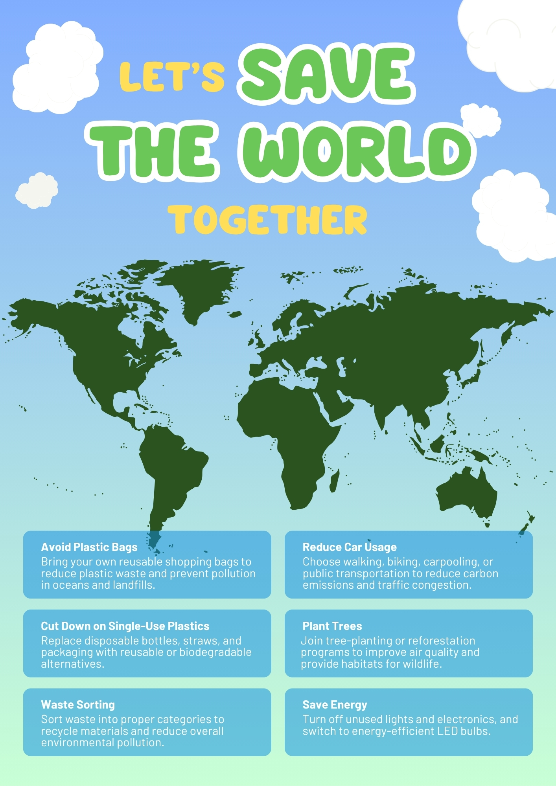
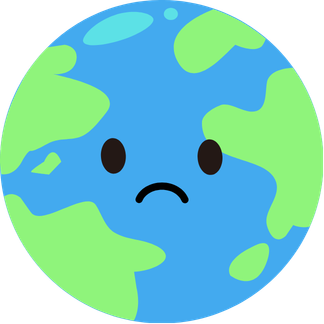

Alternative Media / Interactive Design
Let's Save The World Together is an interactive environmental protection poster designed to transform passive viewing into active participation. Through magnetic cards, viewers can flip environmental behaviors from harmful actions into eco-friendly choices, creating an engaging experience that connects personal decisions with environmental change.
The poster includes two interactive sides. The front side presents environmentally harmful behaviors with a sad Earth, while the reverse side reveals eco-friendly actions with a smiling Earth. Magnetic cards allow viewers to physically interact with the poster and experience the transformation.


Click a card to flip it. Click again to turn it back. 点击图标翻面，再次点击即可翻回。
This presentation explains the concept, interaction mechanism, target audience, and theoretical background of the interactive environmental poster. It explores how participatory design can transform environmental communication from passive awareness into active engagement.
This paper discusses the design rationale, target audience, and role of the poster as alternative media. It examines how interactive design encourages participation and transforms abstract environmental issues into everyday actions.
The project began by exploring how environmental messages could become more engaging through physical interaction. Instead of presenting environmental issues through traditional static posters, the design introduced magnetic cards that allow viewers to actively transform harmful behaviors into sustainable actions.